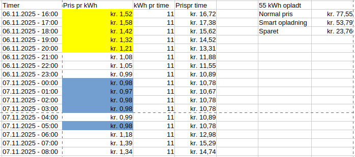

Bilstrøm er en iPhone app, der automatisk styrer opladning af bilen i de timer hvor strømmen er billigst.
I Danmark svinger strømprisen meget, fordi en stor del af strømmen kommer fra vindmøller og solceller, som begge afhænger af vejret.
Der er derfor rigtigt meget at spare ved at oplade, når prisen er lav. Men hvem gider at stå op kl. 3 om natten for at starte bilopladningen
fordi strømmen lige er blevet billigere?. Bilstrøm appen kan klare det for dig.
Sæt bilen til opladning når som helst på dagen, angiv et afgangstidspunkt i appen og start den automatiske opladning. Appen beregner, hvor mange
timer, der er behov for at oplade og vælger de billigste perioder inden afgangstidspunktet.
Først og fremmest sparer du penge. Jo mere du kører, og jo oftere du oplader, jo mere sparer du. Du kan spare flere hundrede kr. pr.
måned afhængig af dit opladningsbehov. Appen koster kun 9 kr. pr. måned og der 1 måned gratis prøveperiode. Med Bilsrøm appen
hjælper du også miljøet. De timer, hvor strømmen er billigts, er nemlig også de timer hvor den højeste andel af strømmen kommer fra grøn
energi.
Besparelsen ved at bruge appen til at oplade din bil afhænger i foreskellen udsving i elpriser. Besparelsen beregnes
ved at sammenligne en straksopladning (hvor bilen oplader fuldt, så snart man sætter stikket i) med en smartopladning. Eksempel:
Du kommer hjem kl. 16 og sætter bilen til opladning og skal afsted kl. 8 næste morgen. Ved straksopladning bliver bilen
opladt i løbet de første 4-6 timer efter bilen er sat i stikket. Ved smart opladning bliver bilen automatisk opladt i de 4-6
billigste timer, inden kl. 8 næste morgen. Et eksempel på dette kan ses nedenfor:

Her kan man se prisen for en normal (gule priser) og en smart opladning (blå priser). I dette tilfælde var der en besparelse på cirka 24 kr.
på bare 1 opladning. Priserne i dette eksempel er fra Andel Energi.